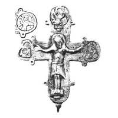

Catalog › CE-1017 · KOR2003-III.1.1.43
Valvă de față de encolpion cu Răstignire gravată, cuie marcate, medalioane cu incrustație de argint
sec. după model sfârșit XI–XII (1001–1200) · Sevastopol (Chersones), Crimeea (raionul Portului, „templul cu arcosolii”), Ucraina · Rezervația Națională „Chersones Tavricheskii” (NZHT), Sevastopol, inv. inv. № 490/36588
single valve of a reliquary cross, aramă; c. după model sfârșit XI–XII (1001–1200); found at Sevastopol (Chersones), Crimeea (raionul Portului, „templul cu arcosolii”), Ucraina; kept at Rezervația Națională „Chersones Tavricheskii” (NZHT), Sevastopol.


Identificare
- Categorie
- Valvă izolată
- Material
- Aramă
- Tehnică
- Turnare în relief; Gravare (incizie); Încrustație
- Dimensiuni
- Î 85 × L 72 mm
Iconografie
- Avers
- Sf. Ioan
- Descriere avers
- Valvă de față cu balamalele de sus pierdute complet și cele de jos parțial; în interior o adâncitură în formă de cruce care repetă schematic imaginile exterioare. În centrul valvei imaginea reliefată a Răstignirii, prelucrată cu dalta; pe palmele lui Hristos sunt marcate cu dalta cuiele; pe capătul de sus și pe cele laterale medalioane cu imagini până la piept ale sfinților, executate cu linii adâncite cu incrustație de argint; marginea valvei este ornată cu crestături oblice.
- Inscripții
- ЪИАОН; МР ΘҮ; ГЄ ЬРО Г
- Limba
- Slavonă
Datare și atribuire
- Datare
- sec. după model sfârșit XI–XII (1001–1200)
- Centru
- Necunoscut
- Tipologie
- Korzukhina–Peskova 2003, tip III 1 1
Descoperire
- Localitate
- Sevastopol (Chersones)
- Regiune
- Crimeea (raionul Portului, „templul cu arcosolii”)
- Țară
- Ucraina
- Context
- Necropolă / mormânt
- Anul
- 1963
Păstrare și referințe
- Colecție
- Rezervația Națională „Chersones Tavricheskii” (NZHT), Sevastopol
- Nr. inventar
- inv. № 490/36588
- Bibliografie
- G. F. Korzukhina, A. A. Peskova, Древнерусские энколпионы. Нагрудные кресты-реликварии XI–XIII вв., Sankt-Petersburg, 2003 [Korzukhina–Peskova 2003], p. 107, cat. nr. III 1 1/43, reprodusă la Табл. 57 (planșe, p. 299). Bibliografie citată în sursă: Колесникова 1978, 166, рис. 5а.
- Figura
- Табл. 57
- Planșe
- Korzukhina–Peskova 2003, Табл. 57 (planșă fără paginație proprie în PDF; p. 299 tipărită)
- Observații
- Datare după Peskova: sec. după model sfârșit XI–XII. Circumstanțe: Săpături L. G. Kolesnikova, 1963; mormântul nr. 3, strat XII–XIV, „templul cu arcosolii”, raionul Portului. Sub mâna stângă a lui Hristos numele Sf. Ioan în scriere inversă (ЪИАОН), sub cea dreaptă monograma Maicii Domnului МР ΘҮ, sub medalionul de sus litere răzlețe ГЄ ЬРО Г. Datarea este a modelului (după Zoțenko 1981, 124). Credit: S. G. Rîjov, T. Iu. Iașaeva, foto NZHT. Inscripții mixte: formule grecești și nume slavone, unele stilizate sau stricate. Coordonate: nu sunt date în sursă.
Citare: Corpus Encolpiorum, CE-1017, Valvă de față de encolpion cu Răstignire gravată, cuie marcate, medalioane cu incrustație de argint, --root/piese/KOR2003-III.1.1.43/ (accesat 2026-10-20).